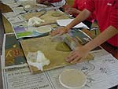

Teacher Professional Development Materials Teacher Professional Development Materials |
Ceramics with Niuean patterns – Brandon Intermediate School
Organisation/Planning
|
|
|
Some students had limited experience of the ceramics process. To meet their needs, Georgia chose various levels of achievement objectives from the four strands of The Arts in the New Zealand Curriculum.
Developing practical knowledge in the visual arts (PK)
From:
- Students will explore elements and principals ... (Level 1)
to:
- Students will apply knowledge of elements and
principals to make objects and images, using art-making conventions and a variety of techniques
tools, materials, processes, and procedures. (Level 4)
Developing ideas in the visual arts (DI)
- Students will generate and develop visual ideas in
response to a variety of motivations, using imagination,
observation, and a study of artists' works. (Level 4)
Communicating and interpreting in the visual arts (CI)
- Students will describe how selected objects and images
communicate different kinds of ideas. (Level 3)
Understanding the visual arts in context (UC)
- Students will identify objects and images in everyday
life and recognise that they serve a variety of purposes.
(Level 2)
Learning outcomes
The students are able to:
- use line to record the shape and detail of Niuean
patterns;
- discuss how these patterns reflect the shapes of the
plants and landforms of Niue;
- explore the properties of earthenware clay by
kneading, rolling and cutting it;
- use clay pieces to form a slab pot, joining the
shapes by scoring the edges and using slip;
- decorate the container with carefully selected
patterns and colour;
- discuss how different cultures use and value
ceramics;
- express individuality and/or cultural identity through
their choice of colour and decorative patterns.
|
Clay is a favourite. It is tactile.
Students can play with it, feel it, shape it.
There is no room for "playing" with other media as much as there is with clay.
Georgia Vaughan
|
|
|
This ceramics elective was organised into three 45-minute sessions for 18 students. After the second session, the art teacher bisque-fired the 18 pots so students could apply glazes during session three.
Equipment for each student included:
- a grapefruit-sized ball of red (terra cotta)
earthenware clay;
- a small paintbrush;
- "dead" paintbrushes sharpened
at both ends;
- a clay knife;
- a wooden board;
- a round plaster board;
- a rolling pin;
- a ruler;
- newspaper;
- a wet tissue.
Earthenware clay is fairly robust, and good for
pressing, throwing, and slab construction. Unused
clay should be wrapped in plastic and kept in a cool area
|

Three-dimensional artwork produces a much higher level of achievement
for these students than drawing does, for example.
Georgia Vaughan
|
|
Assessment
As part of her formative (on-going) assessment, Georgia chose discussion questions that supported learning outcomes (page 2), with a focus on the sculptural elements of line, shape, and form. By asking these questions, she helped students discuss how they developed Niuean pattern ideas (DI), applied patterns and made ceramics (PK), and how pattern, colour and shape can communicate ideas (CI), as well as identifying a variety of purposes for the ceramics (UC).
Discussion questions
- How did you use line in your drawings?
- What part of the Niuean patterning did you use in your own design?
- Can you identify the environmental nature of your pattern?
- Did you have to alter your pattern to make it fit the shape of the container
you wanted to make?
- How successful were you at estimating a consistent 1cm thickness?
- Is the base of your container in proportion to its sides?
- Did you score the edges and apply the slip so the joins of the greenware
were strong enough to survive the bisque firing?
- Did you find it easy or difficult to apply the glaze to your bisque work?
- How have the two colours enhanced the overall effect?
- What could you do to improve the design?
- Show me how you are expressing something about yourself by using
patterns and colour on your ceramic work.
Assessment
When assessing her programme's results and effectiveness, Georgia considered the following questions:
- How positively did students respond to the motivational material provided?
- What other curriculum support material could have been explored?
- What classroom routines were established?
- Were storage facilities appropriate?
- How well did students understand clay properties and maintenance procedures?
- Was the art-making process well-explained? How do you know this?
- How well was the focus of learning – the visual arts elements – understood?
- Would any changes improve the timeframe and materials provided?
- Why were some students unsuccessful in creating a well-designed pot?
- How did this unit relate to The Arts in the New Zealand Curriculum statement?
- Did actual programme outcomes meet stated outcomes? If not, why not?
- How could I improve this unit if I were to teach it again?
Student self-assessment
Students were asked to verbally assess their:
- design ideas;
- ability to judge clay thickness;
- ability to shape a clay pot;
- ability to join and smooth clay shapes;
- decoration, using glazes and their own designs;
- final product.
|
|
|